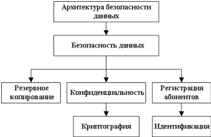

При организации и эксплуатации сети важными требованиями при работе являются следующие:
производительность;
надежность и безопасность;
расширяемость и масштабируемость;
прозрачность;
поддержка разных видов трафика;
управляемость;
совместимость.
Производительность – это характеристика сети, позволяющая оценить, насколько быстро информация передающей рабочей станции достигнет до приемной рабочей станции.
На производительность сети влияют следующие характеристики сети:
конфигурация;
скорость передачи данных;
метод доступа к каналу;
топология сети;
технология.
Если производительность сети перестает отвечать предъявляемым к ней требованиям, то администратор сети может прибегнуть к различным приемам:
изменить конфигурацию сети таким образом, чтобы структура сети более соответствовала структуре информационных потоков;
перейти к другой модели построения распределенных приложений, которая позволила бы уменьшить сетевой трафик;
заменить мосты более скоростными коммутаторами.
Но самым радикальным решением в такой ситуации является переход на более скоростную технологию. Если в сети используются традиционные технологии Ethernet или Token Ring, то переход на Fast Ethernet, FDDI или 100VG-AnyLAN позволит сразу в 10 раз увеличить пропускную способность каналов.
С ростом масштаба сетей возникла необходимость в повышении их производительности. Одним из способов достижения этого стала их микросегментация. Она позволяет уменьшить число пользователей на один сегмент и снизить объем широковещательного трафика, а значит, повысить производительность сети.
Первоначально для микросегментации использовались маршрутизаторы, которые, вообще говоря, не очень приспособлены для этой цели. Решения на их основе были достаточно дорогостоящими и отличались большой временной задержкой и невысокой пропускной способностью. Более подходящими устройствами для микросегментации сетей стали коммутаторы. Благодаря относительно низкой стоимости, высокой производительности и простоте в использовании они быстро завоевали популярность.
Таким образом, сети стали строить на базе коммутаторов и маршрутизаторов. Первые обеспечивают высокоскоростную пересылку трафика между сегментами, входящими в одну подсеть, а вторые передают данные между подсетями, ограничивали распространение широковещательного трафика, решали задачи безопасности и т. д.
Виртуальные ЛВС (VLAN) обеспечивают возможность создания логических групп пользователей в масштабе корпоративной сети. Виртуальные сети позволяют организовать работу в сети более эффективно.
Надежность и отказоустойчивость. Важнейшей характеристикой вычислительных сетей является надежность. Повышение надежности основано на принципе предотвращения неисправностей путем снижения интенсивности отказов и сбоев за счет применения электронных схем и компонентов с высокой и сверхвысокой степенью интеграции, снижения уровня помех, облегченных режимов работы схем, обеспечение тепловых режимов их работы, а также за счет совершенствования методов сборки аппаратуры.
Отказоустойчивость – это такое свойство вычислительной системы, которое обеспечивает ей как логической машине возможность продолжения действий, заданных программой, после возникновения неисправностей. Введение отказоустойчивости требует избыточного аппаратного и программного обеспечения. Направления, связанные с предотвращением неисправностей и отказоустойчивостью, основные в проблеме надежности. На параллельных вычислительных системах достигается как наиболее высокая производительность, так и, во многих случаях, очень высокая надежность. Имеющиеся ресурсы избыточности в параллельных системах могут гибко использоваться как для повышения производительности, так и для повышения надежности.
Следует помнить, что понятие надежности включает не только аппаратные средства, но и программное обеспечение. Главной целью повышения надежности систем является целостность хранимых в них данных.
Безопасность - одна из основных задач, решаемых любой нормальной компьютерной сетью. Проблему безопасности можно рассматривать с разных сторон – злонамеренная порча данных, конфиденциальность информации, несанкционированный доступ, хищения и т.п.
|
 |
|
Рис. 8.1 Задачи обеспечения безопасности данных |
Обеспечить защиту информации в условиях локальной сети всегда легче, чем при наличии на фирме десятка автономно работающих компьютеров. Практически в вашем распоряжении один инструмент – резервное копирование (backup). Для простоты давайте называть этот процесс резервированием. Суть его состоит в создании в безопасном месте полной копии данных, обновляемой регулярно и как можно чаще. Для персонального компьютера более или менее безопасным носителем служат дискеты. Возможно использование стримера, но это уже дополнительные затраты на аппаратуру.
Легче всего обеспечить защиту данных от самых разных неприятностей в случае сети с выделенным файловым сервером. На сервере сосредоточены все наиболее важные файлы, а уберечь одну машину куда проще, чем десять. Концентрированность данных облегчает и резервирование, так как не требуется их собирать по всей сети.
Экранированные линии позволяют повысить безопасность и надежность сети. Экранированные системы гораздо более устойчивы к внешним радиочастотным полям.
Прозрачность – это такое состояние сети, когда пользователь, работая в сети, не видит ее.
Коммуникационная сеть является прозрачной относительно проходящей сквозь нее информации, если выходной поток битов, в точности повторяет входной поток. Но сеть может быть непрозрачной во времени, если из-за меняющихся размеров очередей блоков данных изменяется и время прохождения различных блоков через узлы коммутации. Прозрачность сети по скорости передачи данных указывает, что данные можно передавать с любой нужной скоростью.
Если в сети по одним и тем же маршрутам передаются информационные и управляющие (синхронизирующие) сигналы, то говорят, что сеть прозрачна по отношению к типам сигналов.
Если передаваемая информация может кодироваться любым способом, то это означает, что сеть прозрачна для любых методов кодировок.
Прозрачная сеть является простым решением, в котором для взаимодействия локальных сетей, расположенных на значительном расстоянии друг от друга, используется принцип Plug-and-play (подключись и работай).
Прозрачное соединение. Служба прозрачных локальных сетей обеспечивает сквозное (end-to-end) соединение, связывающее между собой удаленные локальные сети. Привлекательность данного решения состоит в том, что эта служба объединяет удаленные друг от друга на значительное расстояние узлы как части локальной сети. Поэтому не нужно вкладывать средства в изучение новых технологий и создание территориально распределенных сетей (Wide-Area Network – WAN). Пользователям требуется только поддерживать локальное соединение, а провайдер службы прозрачных сетей обеспечит беспрепятственное взаимодействие узлов через сеть масштаба города (Metropolitan-Area Network – MAN) или сеть WAN. Службы Прозрачной локальной сети имеют много преимуществ. Например, пользователь может быстро и безопасно передавать большие объемы данных на значительные расстояния, не обременяя себя сложностями, связанными с работой в сетях WAN.
Трафик в сети складывается случайным образом, однако в нем отражены и некоторые закономерности. Как правило, некоторые пользователи, работающие над общей задачей, (например, сотрудники одного отдела), чаще всего обращаются с запросами либо друг к другу, либо к общему серверу, и только иногда они испытывают необходимость доступа к ресурсам компьютеров другого отдела. Желательно, чтобы структура сети соответствовала структуре информационных потоков. В зависимости от сетевого трафика компьютеры в сети могут быть разделены на группы (сегменты сети). Компьютеры объединяются в группу, если большая часть порождаемых ими сообщений, адресована компьютерам этой же группы.
Для разделения сети на сегменты используются мосты и коммутаторы. Они экранируют локальный трафик внутри сегмента, не передавая за его пределы никаких кадров, кроме тех, которые адресованы компьютерам, находящимся в других сегментах. Таким образом, сеть распадается на отдельные подсети. Это позволяет более рационально выбирать пропускную способность имеющихся линий связи, учитывая интенсивность трафика внутри каждой группы, а также активность обмена данными между группами.
Однако локализация трафика средствами мостов и коммутаторов имеет существенные ограничения. С другой стороны, использование механизма виртуальных сегментов, реализованного в коммутаторах локальных сетей, приводит к полной локализации трафика; такие сегменты полностью изолированы друг от друга, даже в отношении широковещательных кадров. Поэтому в сетях, построенных только на мостах и коммутаторах, компьютеры, принадлежащие разным виртуальным сегментам, не образуют единой сети.
Для того чтобы эффективно консолидировать различные виды трафика в сети АТМ, требуется специальная предварительная подготовка (адаптация) данных, имеющих различный характер: кадры – для цифровых данных, сигналы импульсно-кодовой модуляции – для голоса, потоки битов – для видео. Эффективная консолидация трафика требует также учета и использования статистических вариаций интенсивности различных типов трафика.
ISO внесла большой вклад в стандартизацию сетей. Модель управления сети является основным средством для понимания главных функций систем управления сети. Эта модель состоит из 5 концептуальных областей:
управление эффективностью;
управление конфигурацией;
управление учетом использования ресурсов;
управление неисправностями;
управление защитой данных.
Цель управления эффективностью – измерение и обеспечение различных аспектов эффективности сети для того, чтобы межсетевая эффективность могла поддерживаться на приемлемом уровне. Примерами переменных эффективности, которые могли бы быть обеспечены, являются пропускная способность сети, время реакции пользователей и коэффициент использования линии.
Управление эффективностью включает несколько этапов:
сбор информации об эффективности по тем переменным, которые представляют интерес для администраторов сети;
анализ информации для определения нормальных (базовая строка) уровней;
определение соответствующих порогов эффективности для каждой важной переменной таким образом, что превышение этих порогов указывает на наличие проблемы в сети, достойной внимания.
Цель управления конфигурацией – контролирование информации о сетевой и системной конфигурации для того, чтобы можно было отслеживать и управлять воздействием на работу сети различных версий аппаратных и программных элементов. Т.к. все аппаратные и программные элементы имеют эксплуатационные отклонения, погрешности (или то и другое вместе), которые могут влиять на работу сети, такая информация важна для поддержания гладкой работы сети.
Каждое устройство сети располагает разнообразной информацией о версиях, ассоциируемых с ним. Чтобы обеспечить легкий доступ, подсистемы управления конфигурацией хранят эту информацию в базе данных. Когда возникает какая-нибудь проблема, в этой базе данных может быть проведен поиск ключей, которые могли бы помочь решить эту проблему.
Цель управления учетом использования ресурсов – измерение параметров использования сети, чтобы можно было соответствующим образом регулировать ее использование индивидуальными или групповыми пользователями. Такое регулирование минимизирует число проблем в сети (т.к. ресурсы сети могут быть поделены исходя из возможностей источника) и максимизирует равнодоступность к сети для всех пользователей.
Цель управления неисправностями – выявить, зафиксировать, уведомить пользователей и (в пределах возможного) автоматически устранить проблемы в сети, с тем чтобы эффективно поддерживать работу сети. Так как неисправности могут привести к простоям или недопустимой деградации сети, управление неисправностями, по всей вероятности, является наиболее широко используемым элементом модели управления сети ISO.
Управление неисправностями включает в себя несколько шагов:
определение симптомов проблемы;
изолирование проблемы;
устранение проблемы;
проверка устранения неисправности на всех важных подсистемах;
регистрация обнаружения проблемы и ее решения.
Цель управления защитой данных – контроль доступа к сетевым ресурсам в соответствии с местными руководящими принципами, чтобы сделать невозможными саботаж сети и доступ к чувствительной информации лицам, не имеющим соответствующего разрешения. Например, одна из подсистем управления защитой данных может контролировать регистрацию пользователей ресурса сети, отказывая в доступе тем, кто вводит коды доступа, не соответствующие установленным.
Подсистемы управления защитой данных работают путем разделения источников на санкционированные и несанкционированные области. Для некоторых пользователей доступ к любому источнику сети является несоответствующим.
Подсистемы управления защитой данных выполняют следующие функции:
идентифицируют чувствительные ресурсы сети (включая системы, файлы и другие объекты);
определяют отображения в виде карт между чувствительными источниками сети и набором пользователей;
контролируют точки доступа к чувствительным ресурсам сети;
регистрируют несоответствующий доступ к чувствительным ресурсам сети.
Совместимость и мобильность программного обеспечения. Концепция программной совместимости впервые в широких масштабах была применена разработчиками системы IBM/360. Основная задача при проектировании всего ряда моделей этой системы заключалась в создании такой архитектуры, которая была бы одинаковой с точки зрения пользователя для всех моделей системы независимо от цены и производительности каждой из них. Огромные преимущества такого подхода, позволяющего сохранять существующий задел программного обеспечения при переходе на новые (как правило, более производительные) модели, были быстро оценены как производителями компьютеров, так и пользователями, и начиная с этого времени практически все фирмы-поставщики компьютерного оборудования взяли на вооружение эти принципы, поставляя серии совместимых компьютеров. Следует заметить однако, что со временем даже самая передовая архитектура неизбежно устаревает и возникает потребность внесения радикальных изменений в архитектуру и способы организации вычислительных систем.
В настоящее время одним из наиболее важных факторов, определяющих современные тенденции в развитии информационных технологий, является ориентация компаний-поставщиков компьютерного оборудования на рынок прикладных программных средств.
Этот переход выдвинул ряд новых требований. Прежде всего, такая вычислительная среда должна позволять гибко менять количество и состав аппаратных средств и программного обеспечения в соответствии с меняющимися требованиями решаемых задач. Во-вторых, она должна обеспечивать возможность запуска одних и тех же программных систем на различных аппаратных платформах, т.е. обеспечивать мобильность программного обеспечения. В–третьих, эта среда должна гарантировать возможность применения одних и тех же человеко-машинных интерфейсов на всех компьютерах, входящих в неоднородную сеть. В условиях жесткой конкуренции производителей аппаратных платформ и программного обеспечения сформировалась концепция открытых систем, представляющая собой совокупность стандартов на различные компоненты вычислительной среды, предназначенных для обеспечения мобильности программных средств в рамках неоднородной, распределенной вычислительной системы.
Какие основные требования предъявляются к сетям?
Что такое производительность сети?Какие характеристики влияют на производительность сети?
Какие есть способы повышения производительности сетей?
Как обеспечить высокоскоростную пересылку трафика?
Чем обеспечивается надежность сети?
Что такое отказоустойчивость?
Перечислить задачи безопасности данных в сети.
Для какой цели используется резервное копирование?
Чем обеспечивается безопасность сетей в клиент–серверной архитектуре?
Для какой цели устанавливаются экранированные линии в сети?
Что такое прозрачность сетей?
В каком случае линия прозрачна по отношению к типам сигналов?
Что такое прозрачное соединение?
Что используется для разделения сети на сегменты?
Каким образом можно уменьшить трафик в сети?
Дать определение управляемости сетей и перечислить основные функции управления сетями.
Что включается в управление эффективностью?
Для какой цели используется управление неисправностями?
Для чего необходимо управление конфигурацией?
Какова цель управления защитой данных?
Какие функции подсистемы управления защитой данных?
Дать определение понятия совместимости сетей.